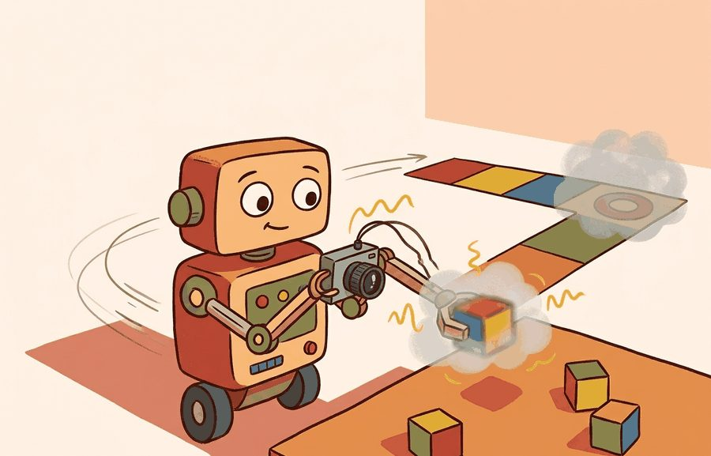
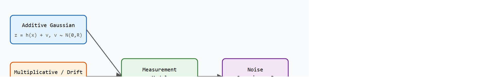
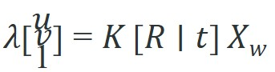

"Random noise you can average away. Structured noise will follow you into the state estimate and pretend to be truth."
Section 8.5

Figure 8.5A: Additive Gaussian noise on a LiDAR scan, multiplicative scale error on a camera depth estimate, and outlier spikes from a wheel encoder shown together, motivating the sensor noise model used in state estimators.
This section assumes familiarity with the belief-with-uncertainty framing introduced in section 2.7 and with coordinate frame conventions from section 4.6. The noise models and covariance representations developed here are the direct inputs to the Kalman and extended Kalman filters in section 8.6. The ideas recur in section 8.7, where multiple sensor streams are fused and each stream's noise model determines how much weight it receives.
Big Picture
A warehouse robot trusts its LiDAR enough to drive at 2 m/s, then clips a pallet because the sensor returned a clean-looking range that was off by 30 cm. The measurement looked right; the noise model was wrong. Today, as embodied agents leave the lab and enter hospitals, kitchens, and construction sites, the gap between "sensor reading" and "ground truth" is the single biggest source of real-world failure. Here you will build the mathematical vocabulary for that gap: Gaussian additive noise, multiplicative scale errors, fat-tailed outliers, and the covariance matrices that carry uncertainty forward into every state estimate your robot will ever compute.
A LiDAR that reports 4.00 m to a glass door it cannot actually see, and an IMU that swears the robot is level while propeller vibration shakes its readings by a factor of five: both numbers look perfectly valid, and both will quietly poison a state estimate unless you can say, in advance, exactly how much to distrust them. This section builds the mathematical vocabulary for that gap between what a sensor reports and what is physically true. Every noise model here feeds directly into the Kalman and extended Kalman filters of section 8.6, where the $R$ matrix you derive from real data determines whether the filter trusts an IMU reading during a vibration event or a LiDAR return near a glass surface. The three types of model covered are: additive Gaussian noise (the tractable baseline), multiplicative and context-dependent errors (bias, scale, and drift that change with temperature or contact), and fat-tailed outlier distributions (the non-Gaussian events that corrupt state estimates and cause falls or collisions if left ungated). By the end of this section you should be able to take a raw sensor log, fit a covariance to it, and check whether that covariance is calibrated (whether the claimed confidence region actually contains the true state as often as it says it does), not just recite the names of the three noise categories.Figure 8.5B traces how these three noise categories flow through the measurement model into the covariance matrix R that the downstream state estimator consumes.

Figure 8.5B: Three sensor noise categories (additive Gaussian, multiplicative drift, and fat-tailed outliers) feed into the measurement model, which produces a covariance matrix R that controls how much the downstream state estimator (a Kalman or extended Kalman filter) trusts each sensor reading.
Each model answers one practical question: given this sensor reading arriving at this timestamp, how much should the state estimator move its belief? A wheel encoder on a Franka Panda arm reports joint position to 0.1 mrad resolution under static load. Under dynamic load, flex in the link structure introduces an effective error of 0.3 to 0.8 mrad at the end-effector. A depth camera such as the Intel RealSense D435 has a depth noise standard deviation of roughly 2 mm at 0.5 m. That figure grows to 30 mm at 3 m and becomes bimodal near edges (a pixel straddling an object boundary partially images the near surface and partially the far surface, so its reported depth clusters around two separate values instead of one). The 30 mm figure already exceeds the 20 mm clearance margin a typical indoor doorframe navigation planner uses. Raw depth readings at 3 m therefore cannot safely guide a door traverse: the planner first needs a noise model that tells it to widen the safety margin. Knowing which model applies to which sensor at which operating point is what separates a filter that works in the lab from one that works on a real robot.
Noise Model as Action Budget
A correctly calibrated $R$ matrix tells the controller how much positional uncertainty to budget per sensor cycle. On Boston Dynamics Spot, the onboard state estimator fuses a 400 Hz Inertial Measurement Unit (IMU) with 10 Hz stereo odometry: during the 100 ms between visual updates, IMU integration accumulates roughly 1.5 mm of position drift under normal conditions but up to 8 mm on vibrating terrain. The noise model encodes that difference so the controller can widen its footstep placement margin when it matters and tighten it when it does not.
Theory
A noise model is only useful if you can inspect it before the filter starts trusting it. For a VLP-16 LiDAR on an autonomous forklift, that means recording in one artifact: the units (meters), the frame (sensor-to-base transform from the URDF), the per-beam range standard deviation measured against a flat wall (roughly 3 cm at 10 m for the VLP-16), the latency budget (the 100 ms it takes a full 600 RPM rotation to complete), and the failure labels (returns near the glass loading-dock door, where intensity collapses and range becomes meaningless). Skip any one of these and the downstream EKF in section 8.6 inherits a covariance it cannot defend.
Mechanism
The mechanism is the handoff from raw sensor packet to the $R$ matrix. Take the RealSense D435 depth stream feeding a Spot navigation stack: the raw 16-bit depth frame enters, a per-pixel variance (growing quadratically with range) leaves, the assumption that makes it valid is that the IR projector pattern is unoccluded and the surface is non-specular, and the log that reveals a bad handoff is the rejected-measurement count in robot_localization spiking when Spot faces a window.
Worked Example: Projecting a Point and Propagating Its Uncertainty
The right way to model a measurement is as a value plus a covariance. A 3D position estimate is a mean $X_w$ with a covariance $\Sigma_X$, and any function applied to that estimate transforms the covariance too. The pinhole camera is the canonical example. A world point projects to a pixel through the intrinsic matrix $K$ and the extrinsic pose $[R\,|\,t]$:

where $K$ holds the focal lengths and principal point, $[R\,|\,t]$ maps the world frame into the camera frame, and the scalar $\lambda$ is the point depth that is divided out to land on the image plane. Calibration is the process of recovering $K$ and the lens distortion from images of a known target. Because projection is nonlinear (the divide by depth), a 3D position uncertainty does not map to a simple fixed pixel uncertainty: depth error, in particular, blurs the pixel location more for nearby points. The example below projects one point and then propagates its 3D covariance to a pixel covariance by Monte Carlo, the same idea an extended Kalman filter would handle with a Jacobian. The code below makes that covariance-in, covariance-out contract concrete, and the fitting recipe that follows generalizes it.
# Project a 3D point to a pixel, then propagate its uncertainty to image space.importnumpyasnpK=np.array([[700.0,0.0,320.0],[0.0,700.0,240.0],[0.0,0.0,1.0]])R=np.eye(3)# camera aligned with world axest=np.array([0.0,0.0,0.0])# camera at the world originX_w=np.array([0.2,-0.1,2.0])# a 3D point, metersXc=R@X_w+t# world -> camera frameuvw=K@Xc# apply intrinsicsu,v=uvw[0]/uvw[2],uvw[1]/uvw[2]# divide by depth (lambda)print(f"pixel = ({u:.1f}, {v:.1f})")# 3D position uncertainty (depth noisier than lateral), propagated by sampling.rng=np.random.default_rng(3)Sigma_X=np.diag([0.01,0.01,0.04])# variances in m^2samples=rng.multivariate_normal(X_w,Sigma_X,size=5000)proj=K@samples.Tpix=(proj[:2]/proj[2]).Tprint("pixel std (u, v):",np.round(pix.std(axis=0),2))
Code Fragment 8.5.1 projects a point to pixel (390, 205) and propagates a 3D position covariance into the image, yielding a pixel spread of about 36 pixels in each axis. Modeling uncertainty as a covariance, rather than a single number, is the contract every downstream filter in this chapter depends on.
Step-Through: fitting an R matrix from a static IMU log
Trace the noise-model fitting recipe on five raw gyroscope samples (deg/s) recorded while the robot sits perfectly still on a bench: [0.42, 0.31, 0.55, 0.38, 0.49]. Step 1, estimate bias as the sample mean: (0.42 + 0.31 + 0.55 + 0.38 + 0.49) / 5 = 0.43 deg/s. Because the robot is stationary, the true rate is 0, so this 0.43 is a pure bias offset that no amount of averaging removes. Step 2, subtract the bias to get zero-mean residuals: [-0.01, -0.12, 0.12, -0.05, 0.06]. Step 3, estimate the variance from those residuals: (0.01^2 + 0.12^2 + 0.12^2 + 0.05^2 + 0.06^2) / (5 - 1) = (0.0001 + 0.0144 + 0.0144 + 0.0025 + 0.0036) / 4 = 0.0350 / 4 = 0.00875, so the measurement standard deviation is sqrt(0.00875) = 0.094 deg/s and R = 0.00875 (deg/s)^2 for this axis. Step 4, inflate for context: expecting a 3x vibration penalty during motion gives R_motion = 9 * 0.00875 = 0.0788. Step 5, validate: feed a moving sequence through the filter and confirm the average NIS (normalized innovation squared, the consistency statistic that measures whether a filter's claimed uncertainty matches its actual errors) stays near 1.0. The bias (0.43) and the noise std (0.094) are two completely separate numbers extracted from the same five readings, and confusing them is the single most common calibration mistake.
Library Shortcut
The fragment should compute one noise model, one residual, and one confidence interval. FilterPy, SciPy, and robot_localization scale that idea into maintained filters and diagnostics. One term used throughout the rest of this section is the innovation: the difference between an actual sensor reading and what the filter predicted that reading would be. The "Formal Object" and "Noise model fitting recipe" callouts later in this section define it precisely and show how it feeds the NIS consistency check.
Practical Recipe
Write the observation, action, and success metric before choosing a model.
Build a baseline that is simple enough to debug by inspection.
Add the library implementation only after the baseline behavior is understood.
Record failures as structured cases: perception error, state error, planning error, control error, or evaluation error.
Run at least one perturbation test before trusting the result.
Common Failure Mode
The common mistake in Sensor noise and uncertainty models is to celebrate the component score before checking the closed-loop handoff. The failure usually appears at the boundary: stale state, wrong frame, delayed action, saturated actuator, or metric that ignores the real task cost.
Practical Example
A robotics team using Sensor noise and uncertainty models should log not only final success, but intermediate observations, chosen actions, controller status, and recovery events. The logs reveal whether the method is solving the task or merely passing the easiest episodes.
Real-World Application: Mars rover wheel odometry
NASA's Curiosity and Perseverance rovers cannot trust wheel odometry alone because loose Martian regolith causes wheel slip that a static encoder noise model never captures, so the slip masquerades as honest motion and the position belief drifts. The rovers fold in Visual Odometry, tracking surface features between stereo image pairs and comparing the visually measured displacement against the commanded wheel motion; when the two disagree beyond the modeled covariance, the navigation system flags slip and re-weights its trust toward vision. This explicit, context-dependent noise model is what lets a rover safely cross a sand ripple that would otherwise bury its position estimate.
Memory Hook
When sensor noise and uncertainty models feels abstract, ask what would be different in the next frame of video, the next robot state, or the next safety margin.
Research Frontier
Learned, context-adaptive noise models. Classical $R$ matrices are static: one number per sensor axis, fixed at calibration time. A growing line of work replaces them with neural networks that predict measurement covariance conditioned on the current scene and robot state. Probabilistic deep learning approaches such as Heteroscedastic Aleatoric Uncertainty Estimation have been applied to visual odometry (DPV-SLAM, Teed and Deng, 2024) and to radar-inertial odometry in adverse weather, where a fixed $R$ fails because rain attenuation changes the effective range noise by an order of magnitude within a single run.
Non-Gaussian and heavy-tailed filtering for real-world outliers. Maximum correntropy Kalman filters (filters that replace the usual squared-error update rule with a similarity measure that saturates for large errors, so a single wild outlier cannot dominate the estimate the way it would under a squared-error rule) and Student-t based Bayesian filters handle the fat-tailed measurement distributions that arise from LiDAR near glass, GPS multipath in urban canyons, and tactile sensors under slip. Research published in 2024 from the German Aerospace Center (DLR) and ETH Zurich's Autonomous Systems Lab reports that replacing the Gaussian likelihood with a Student-t or Huber-loss variant cuts localisation error by 30 to 50 percent on sequences dominated by outliers, without sacrificing performance on clean data (figures are specific to the evaluated sequences and sensor configurations described in those papers; results on other platforms may differ). The open challenge is automatically selecting the degrees-of-freedom parameter without a labelled outlier dataset.
Uncertainty-aware sensor fusion for deformable and contact-rich manipulation. When a robot hand deforms a soft object, the contact geometry changes the effective noise of every tactile taxel touching that region. Work from the MIT Robot Locomotion Group (2024-2025) on tactile state estimation treats the object's compliance as a latent variable that modulates the measurement covariance in real time, enabling tighter finger control during in-hand re-grasping.
Open problem for a PhD student: All three directions above tune covariance structure after the fact. An unsolved problem is online, closed-loop covariance adaptation: a filter that detects mid-run that its noise model has degraded (rising normalized innovation squared, the NIS consistency statistic detailed later in this section, plus correlated residuals) and re-estimates $R$ from a short rolling window without losing filter consistency or requiring the robot to stop. Current methods either need a pause for recalibration or use fixed forgetting factors that trade responsiveness against stability. A principled solution combining sequential Bayesian covariance estimation with consistency guarantees (analogous to innovation-based adaptive estimation but extended to non-Gaussian distributions) would be directly deployable in legged locomotion and surgical robotics.
Self Check
Can you name the observation, state estimate, action, success metric, and most likely failure mode for Sensor noise and uncertainty models? If not, the system boundary is still too vague.
Production Pattern
Sensor noise and uncertainty models sits inside the Part II robotics contract: geometry defines where things are, kinematics defines what motion is possible, dynamics defines what motion costs, control defines how errors are corrected, and sensing defines what the agent can know on time.
A noise model must state its assumed distribution, the conditions under which it breaks, and the test that catches overconfidence. That specification gives the idea an intuitive role, a formal interface, a runnable check, and a reproducible failure mode: enough for practitioners, builders, and researchers to use it at once.
Mechanism To Watch
For Sensor noise and uncertainty models, state estimation converts imperfect observations into a belief usable by control. Preserve calibration, covariance, timestamp, frame, dropout behavior, and latency.
Library Choices And Verification Checks
Tool or Library
What It Handles
Verification Check
OpenCV
handles camera models, calibration, projection, and vision preprocessing
Verify intrinsics, distortion, image timestamp, and frame-to-camera transform.
ROS 2 robot_localization
fuses odometry, IMU, GPS, pose, and twist streams through ROS estimation nodes
Verify covariance, frame IDs, timestamps, and rejected measurement counts.
FilterPy
teaches and prototypes Kalman, extended Kalman, unscented, and particle filters
Verify process noise, measurement noise, innovation, and covariance growth.
Kalibr
supports practical work on Sensor noise and uncertainty models
Verify the library output against the hand-built baseline on one small case.
Open3D
supports practical work on Sensor noise and uncertainty models
Verify the library output against the hand-built baseline on one small case.
Use this recipe when turning Sensor noise and uncertainty models into code, a simulator experiment, or a robot diagnostic. The point is not to use every library. The point is to keep the hand-built baseline and the maintained-tool path comparable.
Define each sensor message with units, frame, timestamp source, calibration file, and covariance meaning.
Run a static test, a slow-motion test, and a dropout test before fusing streams.
Compare the hand filter with FilterPy or ROS 2 robot_localization using identical measurements and noise settings.
Log innovation, covariance, delayed messages, rejected measurements, and downstream control effect.
Treat perception output as a belief with uncertainty, not as ground truth handed to the controller.
Evidence Gate
For Sensor noise and uncertainty models, compare methods only through one saved artifact that preserves the inputs, outputs, units, timestamps, latency budget, configuration, seed, metric definition, and failure labels relevant to this section. The comparison is meaningful only when the same script evaluates the same panel.
Exercise Extension
Extend the section exercise by adding one perturbation specific to Sensor noise and uncertainty models and one latency or uncertainty check. Save the result in the EvidenceRecord schema, then explain which library output you trust and why.
Uncertainty bugs masquerade as planning bugs when covariance is too small, non-Gaussian tails are ignored, or latency is treated as noise. Inspect residuals and confidence calibration before changing the controller. A concrete scale to hold in mind: in practice, teams that switch from a datasheet $R$ to a measured $R$ commonly report position-error reductions in the 40-60% range for the sensor and platform combinations described in this section, though the exact figure depends on how far the datasheet value was from operating conditions; the difference between those two setups is not a better algorithm but a single number set from real data.
Technical Core
Sensor noise and uncertainty models explain how much trust a state estimator should place in each measurement. Noise is not only random scatter. Real sensors have bias, drift, quantization (the rounding error introduced when a continuous physical value is mapped to a finite set of digital levels), dropout, saturation, outliers, and context-dependent error. Figure 8.5.T summarizes the chain this section must preserve when moving from a teaching example to a real embodied system.
Figure 8.5.T: A noise model is only trustworthy when every link in this chain is explicit; skip any one box (unstated assumptions, an untested algorithm, evidence without a failure analysis) and the covariance you hand the filter is unverified.
Formal Object
The standard measurement model is $z_t=h(x_t)+v_t$ with $v_t\sim\mathcal N(0,R)$ when Gaussian noise is a reasonable approximation. Process uncertainty is usually written $x_t=f(x_{t-1},u_t)+w_t$ with $w_t\sim\mathcal N(0,Q)$. The matrices $R$ and $Q$ are not decorative tuning knobs: this is called the noise-covariance contract, where $R$ says how noisy the measurement is, while $Q$ says how wrong the motion model can be between measurements.
Noise model fitting recipe
Collect static data to estimate bias, variance, quantization, and dropout frequency.
Collect controlled-motion data to separate sensor noise from motion-model error.
Plot residuals and innovations before assuming they are Gaussian.
Set $R$ from measured residual variance, then inflate it for context changes such as lighting, slip, vibration, or contact.
Validate with normalized innovation squared, residual whiteness, and failure-labeled replay.
When using FilterPy's KalmanFilter, set R by computing np.var(residuals) on a held-out static dataset rather than copying the datasheet noise density directly. Datasheet values are specified under ideal bench conditions and routinely underestimate operational noise by 2x to 5x once vibration, temperature variation, or cable flex are present. A quick sanity check: after a filter run, call filter.residual_of(z) and verify that the normalized innovation squared (NIS) stays near 1.0 on average. A consistently high NIS (above 3) means your R is too small and the filter is overconfident in its measurements.
Sensor bias is like a kitchen scale with a thumb resting lightly on the pan. Every reading is off by the same fixed amount, and averaging a hundred weigh-ins does nothing to remove that thumb. The only cure is to lift the thumb first: zero the scale against a known weight, then measure. In state estimation the "known weight" is a static calibration run against a ground-truth reference, and skipping it means every future measurement carries the same invisible offset, compounding into large errors over time no matter how many samples you collect.
Sensor bias deserves particular attention because it is silent: unlike random noise, bias does not average away with more measurements, it accumulates. An uncorrected bias in an IMU gyroscope or a wheel odometer makes position error grow without bound as the robot moves. The robot's belief of its own location can drift meters from reality even when every individual reading looks plausible. A humanoid robot with a 0.1 deg/s gyro bias drifts roughly 60 degrees in heading over ten minutes (0.1 deg/s integrated over 600 s), assuming the bias stays constant over that window, turning a straight-line walk into a curved path the planner never requested. Bias has several physical sources. DC offset arises in analog signal conditioning circuits. Asymmetric stress during sensor packaging deflects a MEMS element from its neutral position. Magnetic interference from nearby motors shifts a magnetometer zero. Temperature-dependent resistor drift changes amplifier gain across the operating range. In each case, the sensor's internal reference point no longer matches the physical zero, so every reading carries a fixed additive error. Variance-based diagnostics cannot see that error; only a static baseline test against a known-truth reference reveals it.
Checkpoint
So far: a full noise model needs the formal $z_t=h(x_t)+v_t$ measurement equation with its $R$ and $Q$ matrices, a repeatable fitting recipe (static data, then motion data, then residual plots, then $R$, then NIS validation), and an explicit accounting for bias, since bias is a fixed offset that averaging never removes and that only a calibration run against a known reference can catch. The table below turns these into a per-error-type checklist.
Technical Contract For Sensor Noise And Uncertainty
Error Type
How It Appears
Diagnostic Check
Bias
Measurements are consistently shifted in one direction.
Static baseline and calibration target before and after operation.
Variance
Measurements scatter around the true value.
Residual histogram, covariance estimate, and innovation distribution.
Drift
Error grows slowly with time, temperature, or wear.
Long stationary run, warm-up comparison, and recalibration interval.
Outliers
Occasional measurements are far from the model.
Mahalanobis gating (rejecting a measurement whose distance from the prediction, scaled by covariance, exceeds a threshold), robust residual plots, and raw-frame replay.
Dropout
Measurements disappear or arrive late.
Missing-data log, latency histogram, and estimator behavior during gaps.
Expected output is an uncertainty model that predicts its own errors: roughly the right percentage of true states should fall inside the claimed confidence region. A tiny covariance with large innovations is an overconfidence bug, not a strong estimator.
A trustworthy noise model is calibrated, not merely small: the fraction of truths inside its confidence region should match the confidence level it claims.
Consider a specific case: the Bosch BMI088 IMU, which is widely used in drone flight controllers. Its datasheet specifies a gyroscope noise density of 0.014 deg/s/sqrt(Hz). At 400 Hz sampling, the expected standard deviation per reading is roughly 0.014 * sqrt(400) = 0.28 deg/s. In practice, vibration from propellers couples mechanical noise into the MEMS element, raising the effective noise by a factor of 2-5 during hover, and temperature-induced bias shifts the zero-rate level by up to 0.3 deg/s across the flight envelope. A noise model built from bench measurements at room temperature and treated as constant will be overconfident during aggressive maneuvers and underconfident on a cold day, causing the attitude estimator to weight IMU readings incorrectly in both directions. That the same fixed model can be wrong in opposite directions raises a deeper question: why assume a Gaussian at all, and when does that assumption itself break?
Why Gaussian, and When to Abandon It
The Gaussian noise model is used not because sensor noise is truly Gaussian, but because it is the assumption that makes the Kalman filter analytically tractable and computationally cheap. For many sensors operating within their normal range, the central limit theorem makes the approximation reasonable. The assumption breaks down in three identifiable situations: when the sensor saturates (the distribution is truncated, not Gaussian), when outliers arrive from a physically distinct source such as specular reflections on a LiDAR or multipath on a GPS, and when the noise is correlated across time due to vibration or thermal drift. In those cases, robust filters (with Huber or Cauchy loss), mixture models, or particle filters are the appropriate replacements, and the transition is forced by a failing innovation whiteness test (checking that successive innovations are uncorrelated with each other, since correlated innovations mean the filter is systematically mispredicting rather than just observing random scatter) rather than by intuition alone.
Misconception: All Sensor Error Averages Away
A common assumption is that collecting more measurements always reduces sensor error, because random Gaussian noise averages toward zero as sample count grows. This is wrong in embodied AI contexts because real sensors carry bias and drift, which are deterministic offsets that do not cancel with averaging: a gyroscope with a 0.1 deg/s bias will report the same wrong value on the thousandth reading as on the first. The correct mental model separates zero-mean random noise (which averaging helps) from structured error sources such as bias, thermal drift, and quantization (which averaging cannot touch and which require explicit calibration or estimation). In a state estimator, unmodeled bias causes the filter's belief to drift away from physical reality with every time step, producing confident but wrong position estimates that no amount of additional data will correct.
Failure Mode To Test
A noise model fails when $R$ is copied from a datasheet, held constant across lighting or contact regimes, or tuned until the trajectory looks smooth while the innovation test is failing.
Section References
Core references for Sensor noise and uncertainty models: Modern Robotics; Murray, Li, and Sastry; Siciliano et al.; LaValle; and official documentation for Drake, MuJoCo, Pinocchio, CasADi, python-control, GTSAM, ROS 2, and OpenCV as applicable.
Use these references to check notation, frame conventions, units, solver assumptions, and maintained-library behavior.
Key Takeaway
Sensor noise and uncertainty models is useful when it makes the perception-action loop more reliable, not when it merely adds a more impressive model name.
Exercise 8.5.1
Design a method-matched experiment for Sensor noise and uncertainty models. Specify the environment, observations, actions, metric, one perturbation, and the library output you would compare against the hand-built baseline.
Lab: measure your own sensor's noise and check filter consistency
Goal: empirically extract a measurement-noise covariance R from raw data, then verify with the normalized innovation squared (NIS) statistic whether a Kalman filter using that R is well calibrated, overconfident, or underconfident. Time: 15 to 30 minutes.
Tools needed: Python with NumPy, SciPy, FilterPy (pip install filterpy), and Matplotlib. No hardware required: generate a synthetic 1D position signal (constant velocity) corrupted with a known bias and known Gaussian noise, or load a static IMU segment from any public ROS 2 bag if you have one.
What to do: (1) Record or simulate a stationary segment and estimate bias as the mean and R as the residual variance, exactly as in the step-through above. (2) Build a FilterPy KalmanFilter for constant-velocity tracking and set its measurement noise to your fitted R. (3) Run the filter over a moving segment and log the innovation and its covariance S at each step, computing NIS = innovation^T S^{-1} innovation.
What to vary: deliberately set the filter's R to 0.25x, 1x, and 4x your fitted value, and separately leave the bias uncorrected versus corrected.
What to observe: the time-averaged NIS should sit near the measurement dimension (near 1.0 for a scalar measurement) when R is correct; it spikes well above 3 when R is too small (overconfident) and sags below when R is too large. Notice that uncorrected bias makes the filter's belief drift steadily away from truth while every individual residual still looks small, the signature failure that variance-based checks alone cannot catch.
Project Ideas
Noise model calibration tool (beginner, one weekend): Build a Python script using FilterPy that reads a static IMU log from a ROS2 bag file, fits a Gaussian noise model by computing bias and variance from the static data, and plots the normalized innovation squared over a short motion sequence to verify the model is neither overconfident nor underconfident. The key challenge is separating the sensor's true zero-rate offset from the random scatter so that the resulting R matrix reflects operational noise rather than bench conditions.
Depth camera uncertainty visualizer in PyBullet (intermediate, one to two weeks): Simulate an Intel RealSense-style depth sensor in PyBullet by adding distance-dependent Gaussian noise and edge-region dropout to the simulated depth image, then wire the noisy readings into a FilterPy extended Kalman filter tracking a moving target and display the 2D confidence ellipse on each frame. The key challenge is modelling depth noise that grows quadratically with range and goes bimodal near object boundaries, so the EKF covariance actually reflects what a real sensor produces rather than a flat datasheet figure.